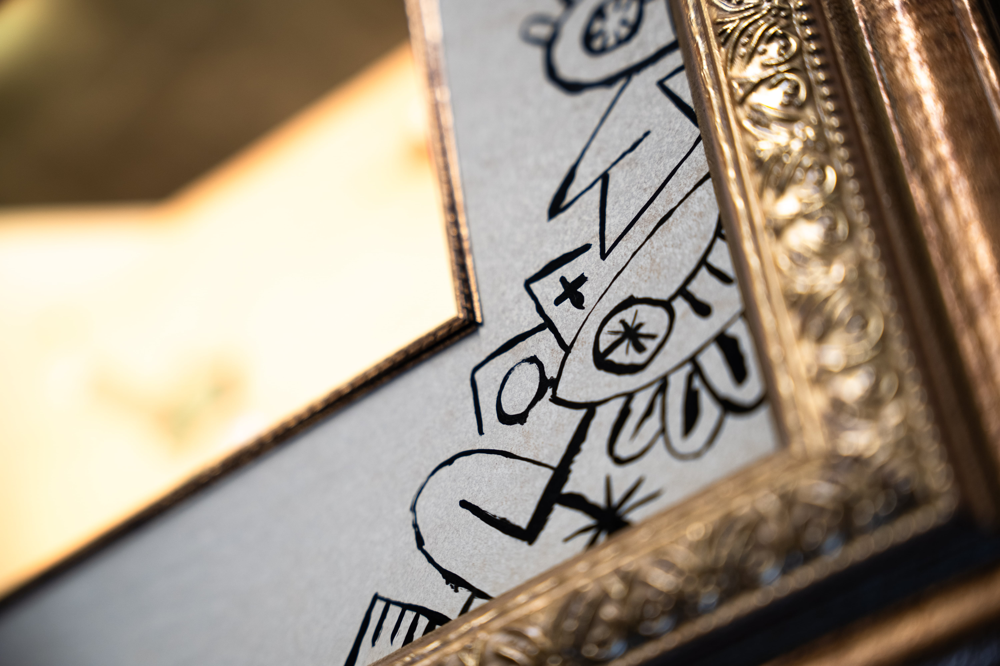
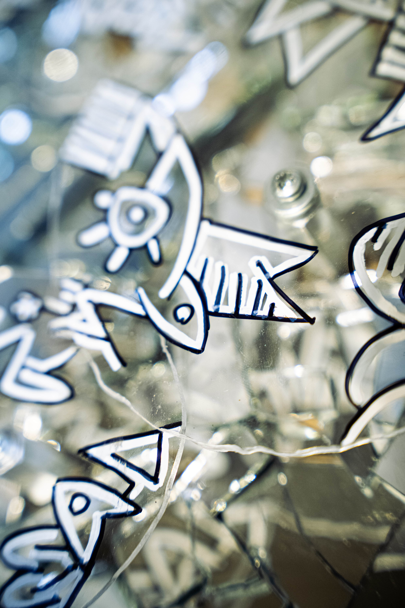
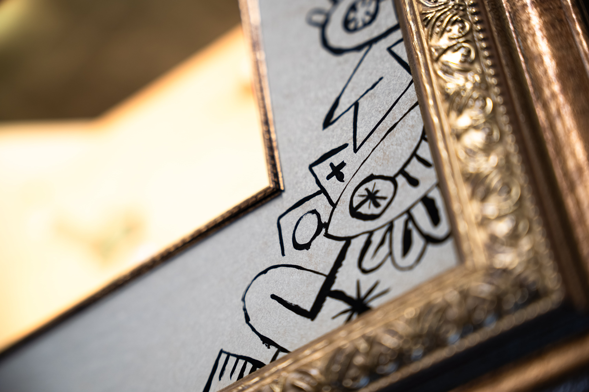
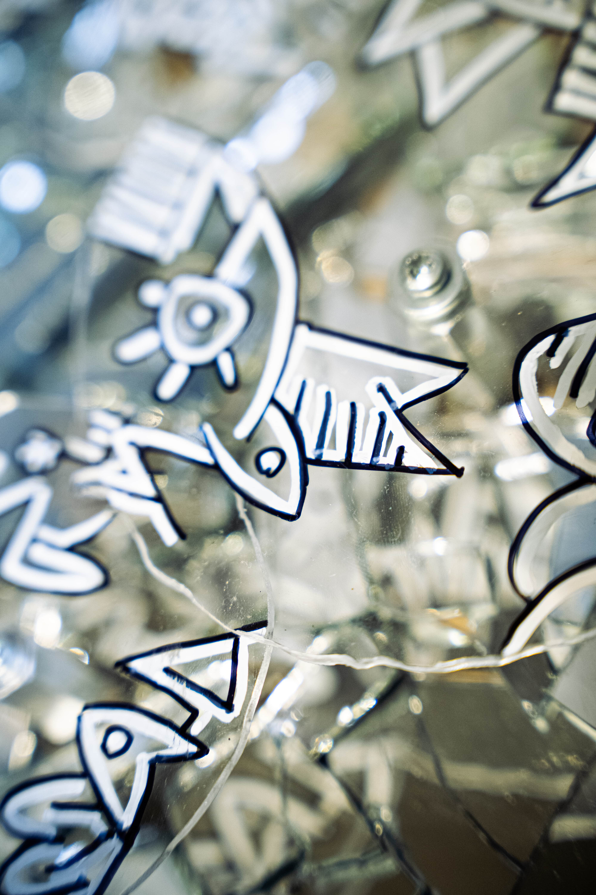

"Réflexion" est une structure cinétique Conceptulisé et créé par
Jean-Christophe Zephir, Meryem Berbiche et Dominic Roberts
Un cadre incliné à 35 degrés, fragments réfléchissants, interagit avec la lumière grâce à des bandes LED
intérieures et extérieures. Des tiges motorisées, surmontées de miroirs, tournent lorsque des capteurs
capacitifs sont activés en touchant des motifs électro-tribaux sur le cadre. Chaque interaction
déclenche des séquences lumineuses et des rotations aléatoires, créant des jeux de reflets en mouvement.
L’œuvre explore le contraste entre la rigidité mécanique et la fluidité organique, évoquant des
phénomènes naturels comme le scintillement de la lumière sur l’eau.
Cette structure propose une vision poétique de la croissance et de l’épanouissement humain. Les
tiges, s’élevant hors du cadre, incarnent l’évolution de l’individu qui dépasse ses limites pour
explorer et se transformer. Parsemées de fragments de miroir, elles reflètent l’identité en perpétuelle
reconfiguration à travers les expériences et interactions.
L’œuvre brise la distance traditionnelle entre spectateur et strucute : en touchant les motifs, le
visiteur déclenche des jeux de lumière uniques, devenant une partie intégrante de l’œuvre. Cette
interaction symbolise la lumière intérieure de chacun et l’impact des rencontres sur notre évolution.
Placée au sol, l’installation évoque aussi l’ancrage et l’humilité, rappelant que grandir ne signifie
pas renier ses racines.
Mêlant technologie et symbolisme, Réflexion invite à contempler notre propre transformation à travers un
dialogue entre lumière, mouvement et identité.

 


